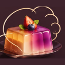
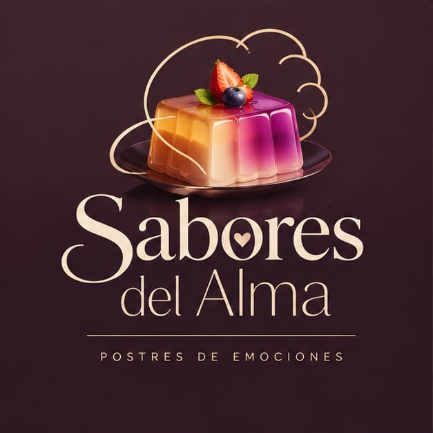
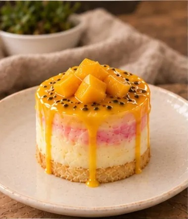
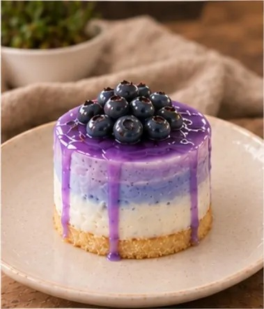
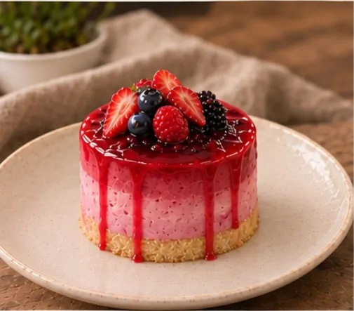
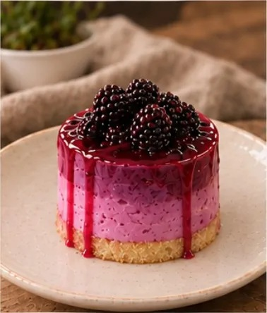
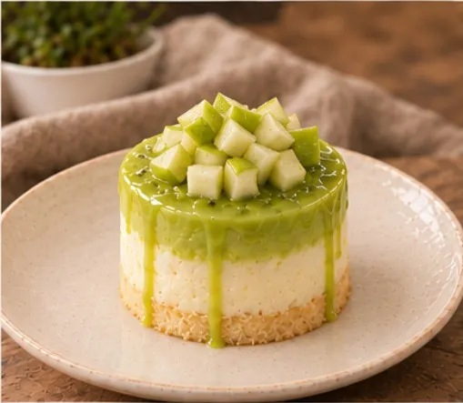
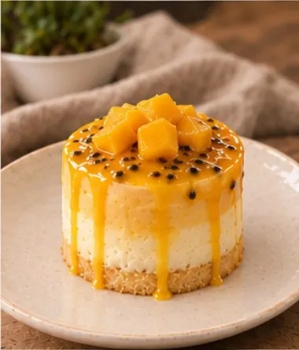
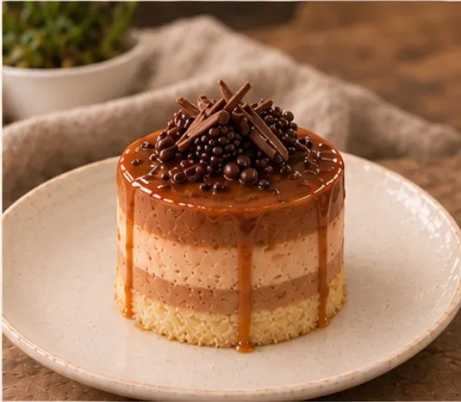
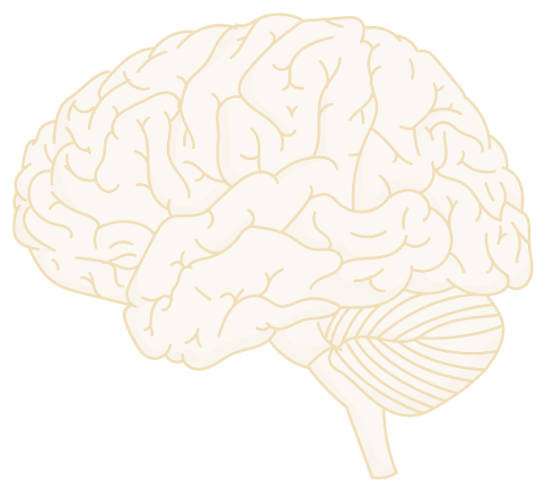

Dopamina
Se relaciona con la motivación, el aprendizaje y la recompensa. Tiene más que ver con querer y anticipar algo que con la felicidad en sí.

Sabores del AlmaPostres de emociones
Cada postre guarda una emoción. Encuentra el tuyo.
Siete postres, siete colores y siete historias para sentir, expresar y saborear lo que llevas dentro.


Dulce AuroraAlegría
Luna SerenaTristeza
Fuego CarmesíIra
Velo NocturnoMiedo
Ámbar VeladoAsco
Secreto DoradoSorpresa
DesdénDesprecioConoce la historia, los ingredientes y la emoción de cada uno.
Elige una emoción y descubre su postre.
Dos postres a la vez: mezcla sus colores y sus emociones.
Qué pasa en el cerebro y el cuerpo cuando sentimos.
Qué es Sabores del Alma y quién lo hace.
Preguntas, ideas de postres o colaboraciones.
Elige la emoción que te acompaña y descubre el postre que la representa.
Postre para la emoción:
Ficha provisional. Puede haber trazas de frutos secos u otros alérgenos según las marcas que se usen; hay que confirmarlo con la receta final.
La relación entre colores, sabores y emociones es simbólica y cambia entre personas y culturas.
Descarga una imagen con tu postre, tu emoción, tu frase y un dibujo que cambia cada vez. Si no te gusta, pide otra.
Siete postres, cada uno creado para una emoción. Elige uno para conocer su historia, sus ingredientes y su frase.
Las emociones no dependen de una sola hormona ni de una sola zona del cerebro. Este es un mapa simplificado: toca, elige y prueba para descubrir cómo funciona.
No existe un "centro de la alegría" ni un "centro del miedo". Las emociones surgen de redes de zonas que trabajan juntas. Toca los puntos del esquema para conocerlas.

Cada punto es una zona que participa en las emociones. Es un esquema muy simplificado, no un mapa exacto.
Neurotransmisores y hormonas son sustancias que el cuerpo usa para comunicar señales. Participan en las emociones, pero ninguna "es" una emoción. Elige un tema y mira cuáles participan.
Se relaciona con la motivación, el aprendizaje y la recompensa. Tiene más que ver con querer y anticipar algo que con la felicidad en sí.
Participa en la regulación del ánimo, el sueño y el apetito. Gran parte de la serotonina del cuerpo se encuentra en el intestino.
Activa el cuerpo y aumenta la alerta y la atención frente a situaciones que lo demandan.
Hormona que ayuda al cuerpo a responder a las exigencias y al estrés. Sube y baja a lo largo del día.
Se asocia con los vínculos sociales y la confianza, y también con el parto y la lactancia. Sus efectos dependen mucho del contexto.
Moléculas que el cuerpo produce y que ayudan a modular el dolor y la sensación de bienestar.
Cuando sentimos algo, el cuerpo responde. Percibir esas señales internas se llama interocepción. Toca una zona para ver qué suele pasar ahí. Cada persona lo siente a su manera.
Hay estudios en los que se le pidió a muchas personas que marcaran dónde sienten cada emoción, y aparecieron zonas que se repiten.
Comer mezcla varios sentidos a la vez, y algunos están muy ligados a la emoción y a la memoria.
Las señales del olfato llegan a zonas relacionadas con la emoción y la memoria. Por eso un aroma puede traer un recuerdo de golpe.
Distinguimos cinco sabores básicos: dulce, salado, ácido, amargo y umami. En muchos estudios lo dulce se asocia con lo agradable.
El color y la presentación crean expectativas antes de probar. Sus significados son en gran parte culturales y simbólicos.
Lo cremoso, lo crujiente o lo frío cambian la experiencia y lo que recordamos de ella.
En Sabores del Alma usamos esto como inspiración creativa: la relación entre cada color, sabor y emoción es simbólica y puede variar entre personas.
El psicólogo Paul Ekman estudió las expresiones del rostro en distintas culturas y propuso un conjunto de emociones básicas, reconocibles por señales parecidas en muchas personas. Elige una y mira cómo cambia el rostro.
Las primeras seis emociones son las más conocidas de su propuesta, y el desprecio se sumó después, con más debate. Otros investigadores, como Lisa Feldman Barrett, cuestionan la idea de emociones universales, y por eso la tratamos como una base para organizar el proyecto, no como una verdad cerrada.
Ocho afirmaciones. Decide si cada una es un mito o una realidad y mira la explicación.
Estas son las referencias en las que nos apoyamos y que conviene consultar para ir más a fondo.
Esta página es educativa y creativa, no reemplaza el consejo de profesionales de la salud.
A veces sentimos dos cosas a la vez. Elige dos postres y mira cómo se mezclan sus colores y las emociones que guardan.
Es nuestro proyecto final del programa Jóvenes Creativos: una página web donde cada postre representa una emoción a través de su color, su sabor y su historia.
Nació de una idea sencilla: es más fácil hablar de lo que sentimos cuando empezamos por algo que se puede ver, oler y probar.
Conectar sabores y colores con el mundo emocional de las personas, uniendo creatividad, ciencia y diseño.
Que cada postre sea una forma de expresar lo que sentimos.
Empatía, creatividad, bienestar, respeto, innovación, responsabilidad, sensibilidad y educación.
Integrante del proyecto
Integrante del proyecto
Sabores del Alma es una propuesta creativa y educativa; no reemplaza el apoyo profesional.
¿Tienes una pregunta, una idea de postre o quieres colaborar? Escríbenos.
Hola, soy Ángel, el asistente de Sabores del Alma. ¿No sabes qué postre elegir? Cuéntame cómo te sientes.
Hola, soy Ángel, el asistente de Sabores del Alma. ¿Cómo te sientes hoy?
Es una herramienta creativa: no es psicólogo ni da diagnósticos, y no reemplaza la ayuda profesional.